Working from the kitchen table with a dog underfoot and a laptop balanced on a stack of cookbooks doesn't exactly scream productive. If you've ever muttered "I really need a better setup" somewhere between back-to-back calls, this one's for you.
I went through the whole evolution myself, propping a laptop on books for months before admitting my neck had opinions about it, slowly fixing one thing at a time until the space actually worked instead of just existing.
Here are ten genuinely useful changes, not the aspirational Pinterest version. Just the stuff that actually makes a home office function.
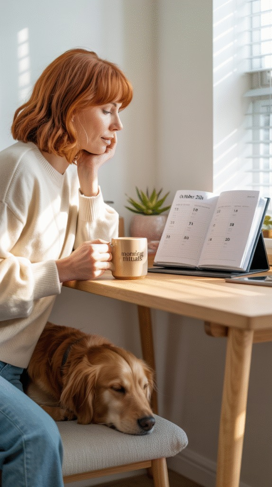
Ideus 16 Oz Insulated Coffee Mug with Lid and Handle, Dark Green
Shop on Amazon10 Tips for a Home Office Setup That Works
1. Don't Forget You Have a Body
Working from home can quietly turn you into someone who hasn't moved in six hours and forgot lunch entirely. We've all had that day.
A standing desk or a simple riser breaks up the sitting. Short walks between tasks reset your focus more than another cup of coffee ever will. Water matters more than it gets credit for, and a scheduled stretch break or two keeps your body from staging a protest by 3 p.m.
Setting a timer to remind yourself to move isn't excessive, it's just practical. Your focus holds up a lot better when your body isn't fighting you.
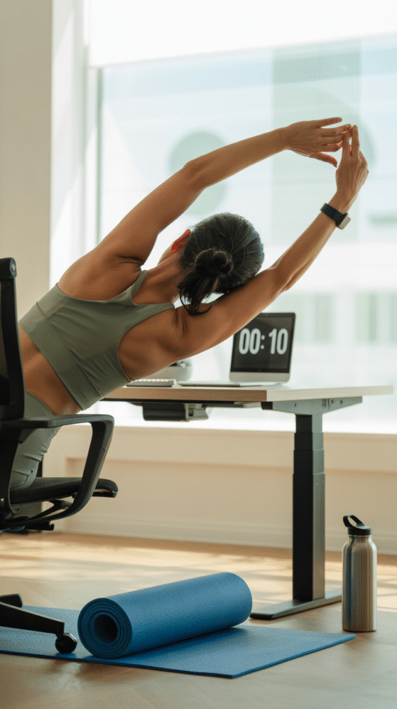
2. Let the Space Look Like You
You don't need a full Pinterest-board transformation. But a space that reflects some actual personality is just more motivating to sit down in every morning.
A few framed prints or photos go a long way. A cozy throw or a cushion you actually like softens the whole setup. A small vision board works too, if that's your thing.
A desk that feels like yours is simply easier to spend hours at than one that feels borrowed from a stock photo.
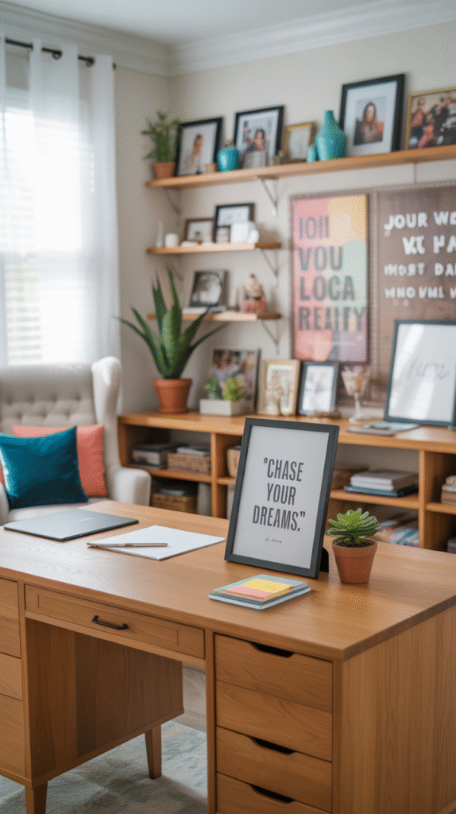

3. Build a Routine That Actually Sticks
A home office doesn't run on willpower alone. It runs on routine, the kind that removes the daily decision-making about when to start.
Starting at roughly the same time each day, even on the days you'd rather not, does more for consistency than any productivity app. Real breaks matter too: get up, stretch, say hello to the dog, whatever actually pulls you away from the screen for a minute.
An end-of-day ritual closes the loop. Shutting the laptop, tidying the desk, even just turning off the lamp, small cues like that tell your brain the workday is genuinely finished.
4. Give Work Its Own Zone
When the line between work and home gets blurry, you end up answering emails at 9 p.m. because your desk is three feet from your bed. Not a great pattern to fall into.
A room divider, a shelf, even just a rug can mark where work starts and stops, something as small as a visual boundary does more psychologically than you'd expect.
And when the day's done, actually close the laptop and step away. Your brain needs that clear signal that work mode is over, the same way it needed one to switch into it.
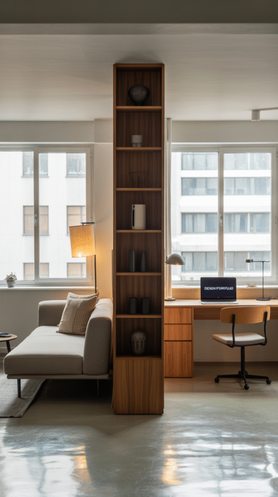
5. Invest in Tech That Actually Works
Nothing kills momentum faster than glitchy tech. If your Wi-Fi drops every time someone else in the house opens a second tab, that's worth fixing before anything else on this list.
A reliable router or mesh system solves the connection issues. Noise-canceling headphones are worth it the moment you have kids, roommates, or a street that's louder than you'd like. An external keyboard and mouse round it out, a laggy trackpad during a long work session is its own special kind of frustrating.
None of this needs to be top-of-the-line. It just needs to actually work when you need it to.
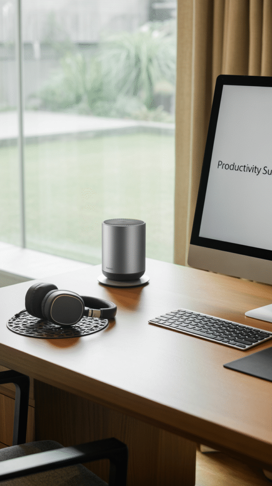
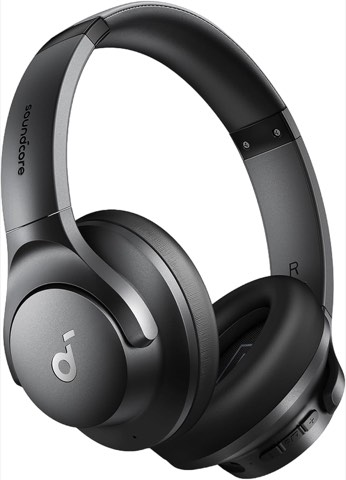
Soundcore by Anker Q20i Hybrid Active Noise Cancelling Headphones, Black
Shop on Amazon6. Keep the Desk Actually Clear
Desk clutter has a way of multiplying overnight, and a messy desk genuinely does translate into a messier, more scattered headspace.
Drawer organizers or a simple desk tray handle the small stuff. A narrow shelf nearby takes the overflow off the surface entirely, and cable clips are a five-minute fix for the tangle living behind your monitor.
You can absolutely still keep a plant on the desk. Just maybe don't let it become a second job.
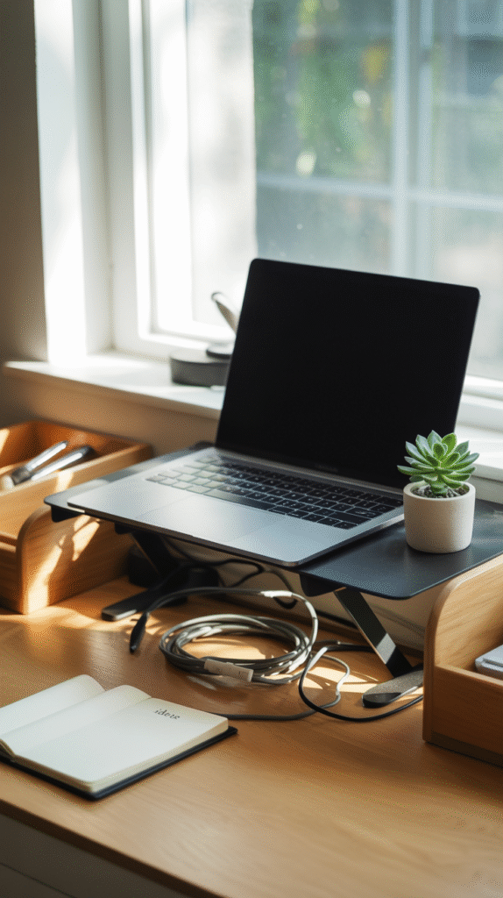
7. Get the Lighting Right
Lighting affects a lot more than how you look on a call, it genuinely shapes your focus and energy through the day.
Natural light from the side works best; avoid anything directly behind your screen, since that just turns you into a silhouette. A soft desk lamp covers the darker hours, and skip anything overhead that feels more like an interrogation room than a workspace.
Warm white light is the move if you're choosing bulbs. It stays cozy without making you feel like you're about to fall asleep at your desk.
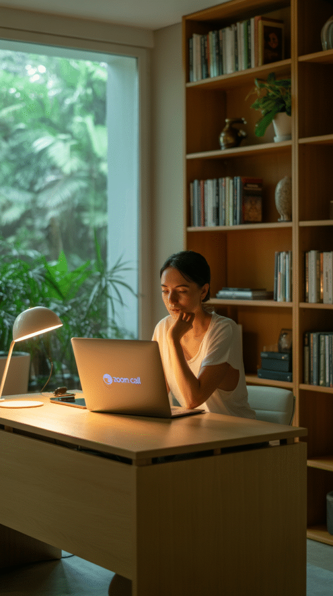
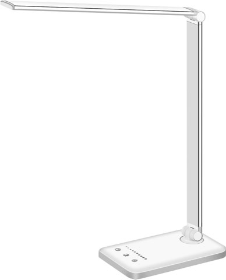
White Crown LED Desk Lamp, Dimmable, with USB Charging Port, 5 Lighting Modes
Shop on Amazon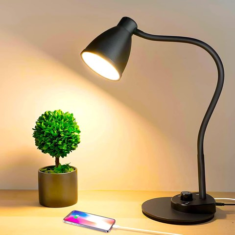
BOHON LED Desk Lamp with USB Charging Port, 3 Color Modes, Dimmable, Black
Shop on Amazon8. Get Your Screen to Eye Level
Hours of looking down at a laptop screen adds up fast, and your neck will absolutely let you know about it.
A laptop stand fixes this instantly, and a stack of sturdy books works in a pinch if that's what you've got on hand, no shame in it, most of us have been there.
An external monitor solves it even better, with the added bonus of just giving you more screen to work with. Either way, eye-level screen means no more hunching, which means fewer aches by the end of the day.
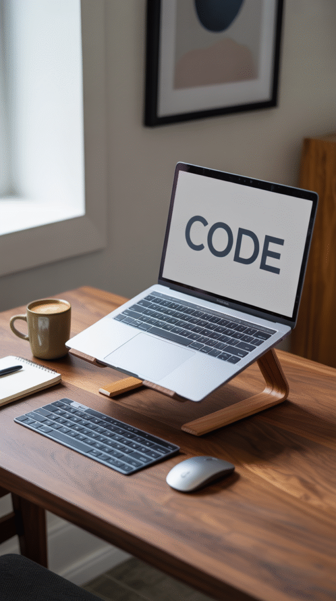
9. Don't Cheap Out on the Chair
That dining chair you've been using five days a week is not your friend, no matter how it's held up so far.
Look for adjustable height, real lumbar support, breathable material, and a design that actually supports how your body sits rather than fighting it.
I put off buying a proper ergonomic chair for way too long. The difference the first week was honestly a little dramatic, turns out my spine had opinions it just never got to voice before.
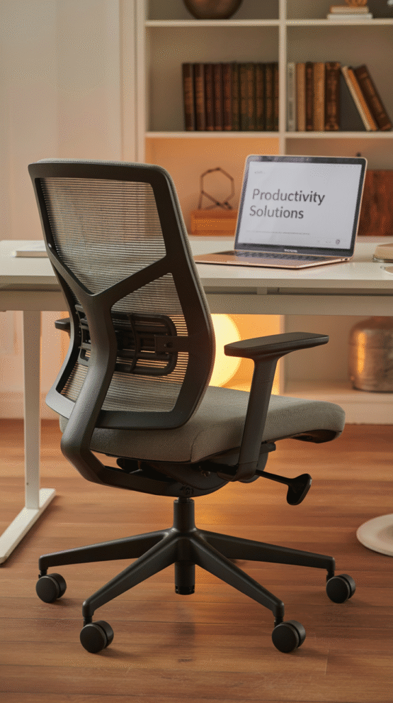
10. Claim a Spot, Even If It's Just a Corner
You don't need a dedicated room with a door that closes. You need one consistent spot your brain learns to associate with work.
That association is doing more than you'd think, sit in the same place every day and your brain starts switching into work mode almost automatically, before you've even opened your laptop.
If you can swing it, pick a spot near natural light. It helps with focus and energy, and it's a nice bonus that you'll stop looking washed out on every video call.
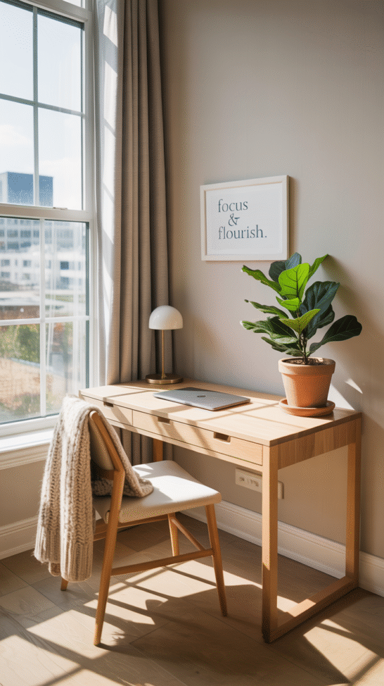
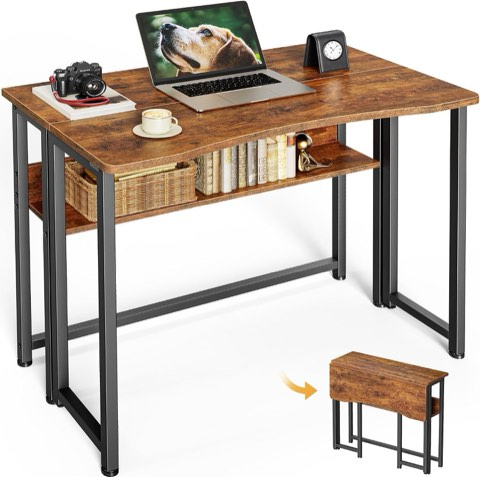
Huuger Folding Desk with Storage Shelf, 31.5 Inch Foldable Computer Table
Shop on AmazonFinal Thoughts
Your home office doesn't need to look like it belongs in a design magazine to actually work for you. It needs a consistent spot, a chair that doesn't punish your back, decent lighting, and a few boundaries between "work" and "everything else."
Start with whichever one of these feels most overdue, the chair, the lighting, finally moving the desk away from the bed, and build from there. You don't need to fix all ten in one weekend.
Your home office, your own rules. Just maybe not from the kitchen table anymore.